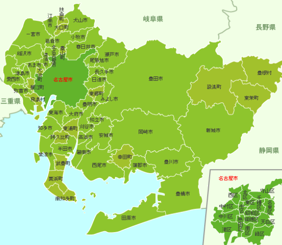

01
支払い条件を比較
日払い・週払いなど、希望する給与受取条件に近い求人を確認します。
POINT
日払い・週払いなど、希望する給与受取条件に近い求人を確認します。
名古屋・豊田・岡崎・刈谷・安城・豊橋など、勤務地の希望も相談できます。
早めに働きたい方は、選考の進みやすさも含めて求人を確認します。
JOBS

部品の組立、加工、ライン作業など

目視確認、測定、品質チェックなど

仕分け、梱包、ピッキングなど

設備操作、材料セット、簡単な点検など
※ご紹介可能な求人・職種は時期や条件により異なります。
AREA


勤務エリア・日払い条件・寮の希望などをまとめて相談できます。未経験の方も条件に合う仕事からご案内します。
FLOW
希望エリア・職種・勤務開始時期などをメッセージで送信。
条件に近い求人をご案内。給与受取条件なども確認します。
勤務条件を確認し、問題なければお仕事開始です。
CASE
勤務開始までのスピードを重視し、条件に合う求人を効率よく探したい方。
日払い・週払い対応の有無を確認しながら仕事を比較したい方。
製造・検査・軽作業など、経験不問の求人から探したい方。
FAQ
日払い・週払いに対応した求人を確認できます。利用条件や締め日は求人ごとに異なるため、事前にご案内します。
未経験から応募できる製造・検査・倉庫・軽作業系の求人もあります。
求人状況や選考条件によります。早めの勤務をご希望の場合は、その条件を優先して確認します。
いいえ。条件を確認してから応募するか判断できます。まずは希望条件だけでもご相談ください。
START FROM AICHI
愛知県内の日払い・週払い対応求人を
条件からまとめて確認できます。
※求人条件・支払条件・選考速度は案件や時期により異なります。